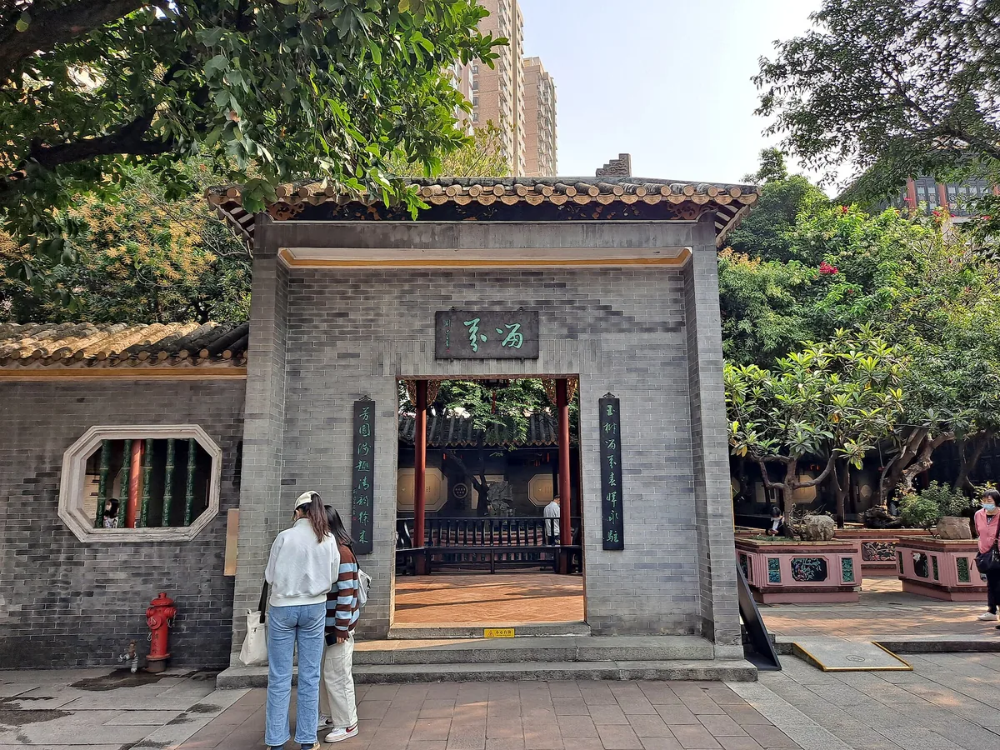
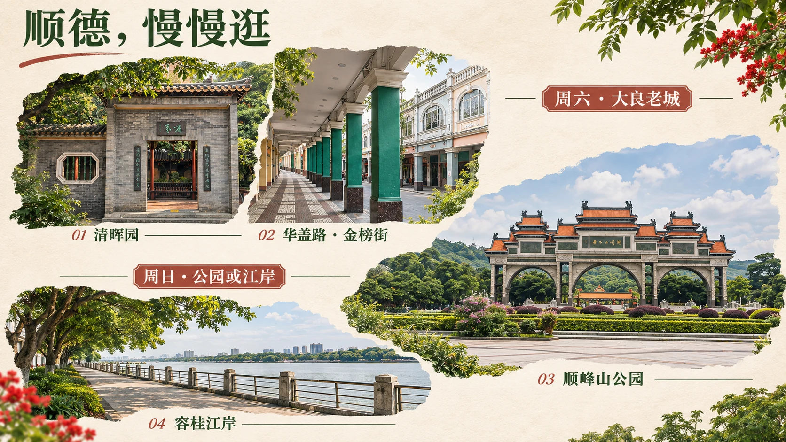

A WEEKEND WELL SPENT
2026.11.06 FRI — 11.08 SUN
去顺德，
过一个
有滋有味的周末。
周五下班出发，周六钻进园林与奶香小巷，
周日在湖边慢慢走。两个人，吃好，也歇好。

寻味 · 岭南住大良，不换酒店钟楼—清晖园附近，步行省心
周六园林，周日湖边一天一片，不跨区赶打卡
睡饱，10点再出门自选交通，周末慢慢开始
01 / FIND YOUR WAY
这一趟，这样走。
先看导览，把周末放进一张图；再用下方实景地图查看位置。

地标按真实经纬度放置，部分为地点中心或照片位置；不代表精确入口。本站不提供外部导航跳转。
02 / THREE LITTLE CHAPTERS
三天两晚，不用赶。
周六、周日都从10:00开始。美食排队长，就换一家；走累了，就回酒店。
SUNDAY, YOUR WAY
周日上午，三选一。
三种方案都10点出发，选择后同步更新行程、实景图和导出。
03 / PLACES WITH A LITTLE SOUL
慢下来，看点风景。
有实拍，也有走法。点击卡片，打开详情。
04 / ALWAYS ROOM FOR ONE MORE BITE
把胃口，留给顺德。
吃什么、怎么点、会是什么口感。把每家店的体验看清楚，再留一顿饭给它。
点击“点单与体验”，查看两人点单、口味环境、顺路安排与食客原文。食物照片仅用真实实拍；没有匹配照片的店使用文字封面。
05 / MAKE YOURSELF AT HOME
住得顺路，就很划算。
11月6日入住 → 11月8日退房 · 1间房 / 2成人 / 连住2晚
先在大良钟楼站周边找，再比较两晚总价。
优先地图步行约10分钟内、有外窗、近期卫生与隔音评价稳定、可取消的房型。愿意多走一点时，再放宽到15分钟。酒店不必含早，把早茶留给街坊店。
“清晖园店”可能距景区几公里，订前核对准确位置；周五晚到，提前联系前台保留房间。
已核对门店与位置线索，尚未取得 11/6–11/8 的实时房价、房态与取消条款。比较时统一为两晚、同类床型、同等可退条件。
06 / NOTES FROM XIAOHONGSHU
做过功课，再慢慢逛。
读了正文，再挑适合这次的建议。个人口味与路线整理，分别注明。
核对于2026年11月4日。保留作者、发布日期与原文入口；游记里的排队、口味和拍照偏好仅作参考，开放和票务以官方信息为准。
07 / BEFORE YOU GO
出发前，再看一眼。
勾选记录保存在当前浏览器，换设备需要重新勾选。
未填报未经核实的11/6–11/8逐日天气；晴天选湖边，下雨选室内。
SOURCES & FIELD NOTES查证来源与图片署名核对于 2026.11.04 ＋
开放、票务、交通以官方信息优先；酒店与餐饮未取得指定日期实时报价。步行、打车耗时和点单参考为规划估算。实拍与卫星影像均可能为历史记录，不代表出发日景观、天气或人流。
摄影与图像
新增视觉导览为 AI 创作的写实摄影拼贴，非导航地图、非现场实拍。参考 EditQ 的清晖园、Nissangeniss 的顺峰山（CC BY-SA 4.0）及 Lau Hau Yatyue Tiger 的华盖路照片（CC0）重构；容桂江岸为生成的艺术场景。该参考衍生图按 CC BY-SA 4.0 提供。完整提示词、参考照片与生成记录 ↗
清晖园两张实拍：EditQ，CC BY-SA 4.0；顺峰山牌坊：Nissangeniss，CC BY-SA 4.0。华盖路街景与民信双皮奶实拍：Lau Hau Yatyue Tiger，CC0，2024年1月拍摄。图片等比例压缩，页面展示可能裁切；实景定位图使用Esri卫星影像与OpenStreetMap街道底图，来源署名保留在地图内。
清晖园园景原图 ↗ · 清晖园庭院原图 ↗ · 顺峰山牌坊原图 ↗ · 华盖路实拍 ↗ · 双皮奶实拍 ↗ · CC BY-SA 4.0 许可 ↗